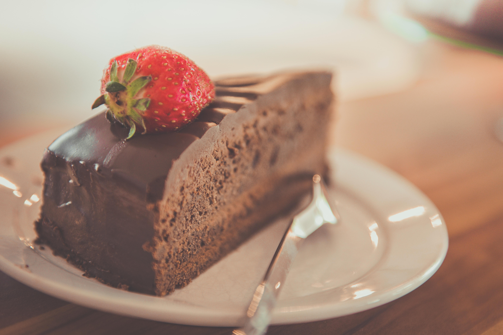

Back-of-the-Box Hershey's Chocolate Cake

Welcome to recipe of the best chocolate cake
A rich super moist chocolate cake with a chocolate buttercream frosting. This is the best cake in the world!
Ingredients
- Sugar
- Two cups of white sugar add the perfect amount of sweetness, while locking in the moisture from the other ingredients.
- Flour
- All-purpose flour provides structure, acts as a thickening agent, and helps build the fluffy texture.
- Cocoa Powder
- Of course, you'll want to use Hershey's brand unsweetened cocoa powder for this one. It adds the rich, indulgent flavor you know and love.
- Leaveners
- Baking powder and baking soda act as leaveners, which means they cause the batter to expand and give the cake a perfect rise.
- Salt
- Just a teaspoon of salt is all you'll need to add complexity and highlight the other flavors. It might not seem like a lot, but you'll definitely miss the salt if you skip it.
- Eggs
- Whole eggs affect the cake in a number of ways: They provide structure, add moisture, lend flavor, and contribute to a tender texture.
- Milk
- Whole milk adds moisture and helps the batter come together smoothly.
- Oil
- Vegetable oil ensures your cake will never be dry.
- Vanilla
- Two teaspoons of vanilla extract add complex flavor and bring out the flavors of the other ingredients, such as the cocoa powder.
- Boiling Water
- You might be wondering why this recipe calls for a cup of boiling water. It intensifies the chocolatey flavor, contributes to the fluffy texture, and reacts with the leaveners to create an even higher rise.
Take Me to the Home Page